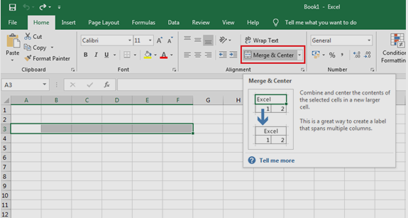
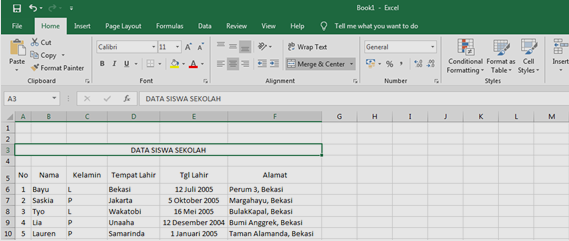
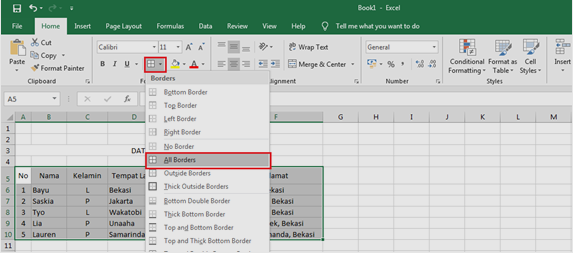
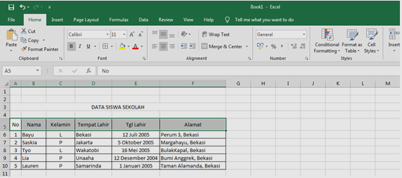

Cara membuat tabel di microsoft excel
Halo sobat, Pada kesempatan ini Olstudive akan mengajak Anda cara membuat tabel di microsoft excel. Namun sebelum membuat tabel alangkah baiknya mengetahui apa itu tabel? Dan juga Tujuan dibuatnya tabel. Mari simak pembahasan dibawah ini.
Pengertian
Tabel adalah daftar yang berisikan sejumlah data atau informasi yang biasanya berupa kata-kata maupun angka yang didalamnya tersusun secara sistematis dan saling terkait.
Tujuan
Tujuan dibuatnya tabel adalah agar si pemberi informasi dapat memberikan informasi secara ringkas sekaligus mempermudah si pembaca dalam memahami informasi.
Langkah Membuat Tabel
Jenis tabel yang akan kita buat kali ini adalah tabel biasa yang dimana hanya dilengkapi dengan sisi garis disetiap baris dan kolomnya. Biasanya tabel jenis ini dibuat untuk daftar pelajaran kelas,daftar absensi siswa,data siswa sekolah dan masih banyak yang lainnya . Sebagai contoh tabel yang akan kita buat adalah data siswa sekolah.
Langkah Pertama, buat terlebih dahulu judul tabel dengan cara blok beberapa kolom lalu klik merge and center sehingga beberapa kolom yang telah kita blok bergabung menjadi satu kolom.
Jika Sudah di Merge and center anda langsung bisa isi kolom tersebut sesuai keinginan anda.
-
Langkah Kedua, langkahi 1 baris dari kolom judul yang kita buat agar bertujuan tabel yang kita buat memiliki jarak dengan judul. Lalu jika sudah isi dibagian baris 5 dan 10 (Kolom A sampai F) dengan keterangan yang diinginkan. Karena disini saya membuat data siswa sekolah maka saya mengisi keterangan yang berhubungan dengan siswa sekolah
Jika sudah maka langkah berikutnya membuat tabel dengan menggunakan border dengan cara pilih border yang terdapat dibagian menu font lalu pilih All Borders.
Selesai. Tabel pun sudah terbuat
-
Langkah Ketiga , kita atur tampilannya agar menarik, eits tapi ini hanya opsional ya (Boleh dilakukan atau tidak).
Jika ingin memberikan warna pada tabel kalian tinggal blok baris dan kolom yang ingin diwarnai dengan menggunakan Theme Colors yang terdapat di menu Font.
Tadaaa!!! Tabel pun sudah terbuat jika dirasa masih kurang menarik, kalian dapat merubah tampilan warna dan gaya tulisan sesuai dengan selera .Silahkan berkreasi, dicoba dan jangan takut salah, Keep spirit ya sobat Olstudive!